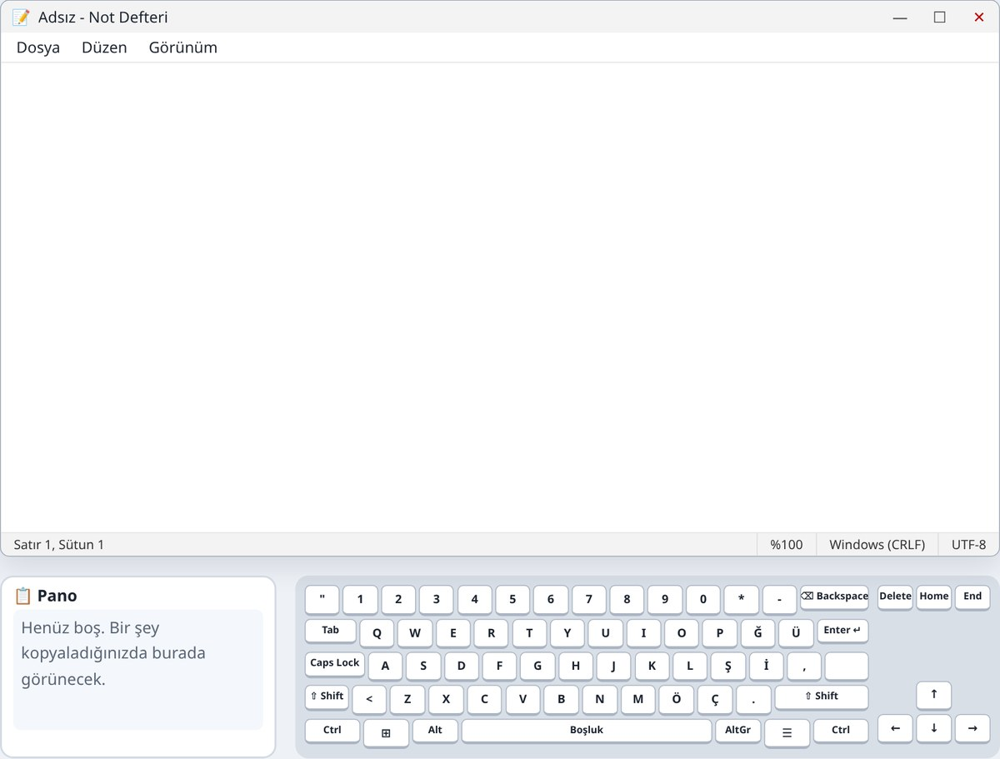
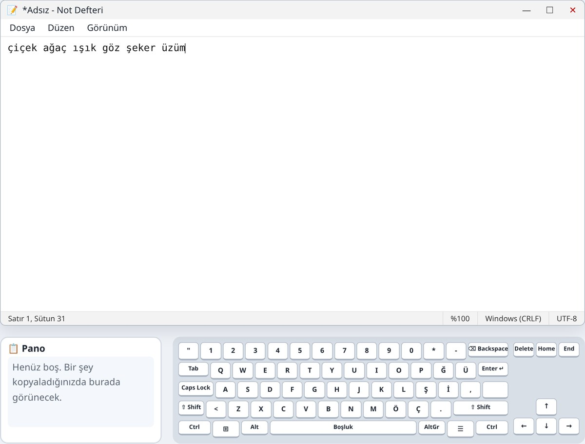
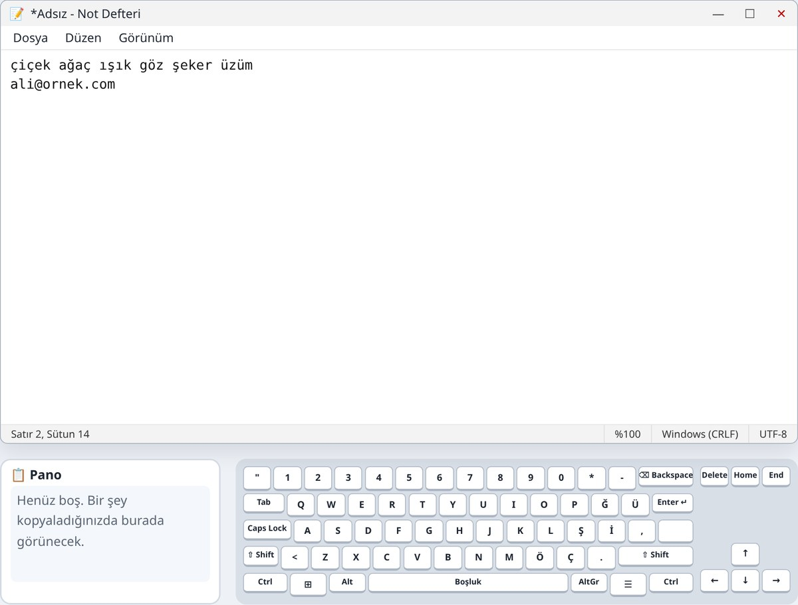
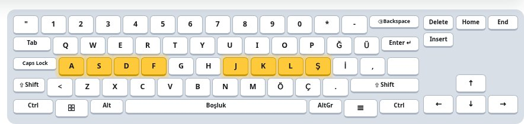

2. Hafta: Klavye
Alıştırmalar ve oyunlar
Bu hafta
| 1 Klavyeyi tanıyalım | 25 dk |
|---|---|
| 2 F klavye ve Q klavye | 20 dk |
| 3 Harf bulma alıştırması | 20 dk |
| 4 On parmak: temel sıra | 25 dk |
| 5 Rakamlar ve sayılar | 25 dk |
| 6 İşaretler: ( ) / = " # € | 20 dk |
|---|---|
| 7 Yazı yazarken başıma gelenler | 25 dk |
| 8 Klavye dili: TUR, ENG, Q, F | 30 dk |
| 9 Tuş avı | 20 dk |
| 10 Bayram kartı yazalım | 25 dk |
Hafta sonunda: ödev (gerçek bilgisayarda altı küçük görev) ve 12 soruluk test.
Ders 1 · Klavyeyi tanıyalım

Ders 1 · Alıştırma 1
| elma | Not Defteri’ne tıklayıp harfleri yazın |
|---|---|
| elma armut | En alttaki uzun Boşluk tuşuyla araya boşluk |
| kiraz | Enter ↵ ile alt satıra geçip yazın |
İmleç, yanıp sönen ince çizgidir. Yazdığınız harfler imlecin olduğu yere gelir.
Ders 1 · Alıştırma 2
Backspace geriye, Delete ileriye siler. Backspace imlecin solundaki, Delete sağındaki harfi siler.
Ders 1 · Alıştırma 3
| ⇧ Shift + harf | Ali yazın: yalnızca A büyük. Shift’i basılı tutup A’ya basın, sonra bırakın. |
|---|---|
| Caps Lock | ANKARA yazın, Caps Lock’a bir kez daha basıp kapatın, yanına ankara yazın. |
Caps Lock açık kalırsa her şey büyük harf yazılır. Şifre yazarken buna dikkat edin.
Ders 1 · Alıştırma 4
Türkçede İ ve I ayrı harflerdir; klavyede de ayrı tuşlardır.

Ders 1 · Alıştırma 5
| Shift + 1 | ! (ünlem) |
|---|---|
| Shift + * | ? (soru işareti), sağ üstte 0’ın yanında |
| AltGr + Q | @ (et işareti): e-posta adresleri için |
Yazın: Nasılsın? Harika! ve ali@ornek.com
AltGr yoksa Ctrl ve Alt’ı birlikte basılı tutup Q’ya basmak da @ yazar.

Ders 1 · Alıştırma 6
| ↑ ↓ ← → | İmleci harf harf, satır satır hareket ettirir. Dördüne de basın. |
|---|---|
| Home | İmleci satırın başına götürür. |
| End | İmleci satırın sonuna götürür. |
| Tab · Esc | Formda sonraki kutuya geç · vazgeç, menüyü kapat. ⊞ Windows tuşu Başlat’ı açar. |
Fareye gerek kalmadan imleci istediğiniz yere götürebilirsiniz. Uzun satırlarda Home ve End çok zaman kazandırır.
Ders 2 · F klavye ve Q klavye
| Q klavye | Üst sıra Q W E R T Y… Bilgisayarların çoğunda böyledir. |
|---|---|
| F klavye | Üst sıra F G Ğ I O D… 1955’te Türkçenin harf sıklığına göre tasarlandı; sesli harfler sol elin altında. |
| Hangisi bende? | Üst harf sırasının ilk tuşuna bakın: Q mu, F mi? |
| Daktilo bilenler | Çoğu daktilo kursu F klavyeyle öğretti. Bilgisayara F düzeni eklenebilir. |
| Windows’ta F eklemek | Ayarlar → Saat ve dil → Klavye ekle → Türkçe F |
| Ortak bilgisayar | Düzeni değiştirdiyseniz işiniz bitince eski hâline getirin. |
Ders 3–4 · Harf bulma ve on parmak
| Sol el | Serçe A, yüzük S, orta D, işaret F |
|---|---|
| Sağ el | İşaret J, orta K, yüzük L, serçe Ş |
| Başparmaklar | Boşluk tuşu |
| F ve J | Üzerindeki küçük çıkıntılar: bakmadan yeri bulunur |
Önce doğru parmak, hız sonra gelir. Sırt dik, bilekler düz; ekran göz hizasının biraz altında.

Harf bulma: ekranda çıkan harfi klavyede bulup basın. Zorlandığınız harfler bir kez daha sorulur.
Ders 5 · Rakamlar ve sayılar
| Tarih | 29.10.2026: nokta, sağ alttaki . tuşu |
|---|---|
| Saat | 14:30: iki nokta için Shift + . |
| Para | 1.250,50 TL: binlik nokta, kuruş virgül |
| % ve + | Shift + 5 yüzde, Shift + 4 artı |
Ders 6 · İşaretler
| ( ) | Shift + 8 açar, Shift + 9 kapatır |
|---|---|
| / (eğik çizgi) | Shift + 7 |
| = (eşittir) | Shift + 0 |
| _ (alt çizgi) | Shift + - |
| " (tırnak) | 1’in solundaki tuş |
| # (diyez) | AltGr + 3 |
|---|---|
| € (avro) | AltGr + E |
| @ (et) | AltGr + Q |
Kural: tuşun üstündeki işaret Shift ile, sağ altındaki AltGr ile yazılır. Örnek: 3 tuşu → 3 · Shift ile ^ · AltGr ile #.
Ders 7 · Yazı yazarken başıma gelenler
| Yazı gelmiyor | İmleç (yanıp sönen çizgi) yazı alanında mı? Yazı alanının içine tıklayın. |
|---|---|
| Harfler siliniyor | Insert tuşuna basılmış (Üzerine yaz). Aynı tuşa bir daha basın. |
| HER ŞEY BÜYÜK | Caps Lock açık. Bir kez basıp kapatın. |
| Sayı tuşları çalışmıyor | Num Lock kapalı. Bir kez basıp açın. |
| ş, ğ, ü yok | Klavye dili ENG olmuş. Alt + Shift ya da ⊞ + Boşluk ile TUR yapın. |
İlk kural: bilgisayar bozulmadı. Önce ekrana ve sağ alttaki simgelere bakın.
Ders 8 · Klavye dili ve düzeni
| 1 | ⊞ Başlat → ⚙ Ayarlar → Saat ve dil → Dil ve bölge |
|---|---|
| 2 | Klavye ekle kutusundan Türkçe F klavye |
| 3 | Sağ alttaki TUR’a tıklayıp düzeni seçin |
| 4 | İşiniz bitince Türkçe Q’ya dönün |
F düzeninde Q klavyenin tuşlarıyla F harfleri yazılır: F tuşu a, H tuşu t yazar.
Ders 9–10 · Tekrar
| Tuş avı | İpucu yanmadan, tarif edilen tuşu gerçek klavyede bulup basın: Enter, Esc, Home, End, AltGr… |
|---|---|
| Bayram kartı | Kısa bir mesaj yazın: cümle büyük harfle başlar, nokta ya da ünlemle biter. Kesme işareti: Shift + 2 (İzmir’e). Hataları düzeltip bayram kartı adıyla kaydedin. |
Dizüstünde Home ve End yoksa: Fn basılıyken ← →. Klavyedeki küçük ışıklar Caps Lock ve Num Lock’ı gösterir.
Özet
| Boşluk · Enter | Kelimeler arasına boşluk · alt satıra geç |
|---|---|
| ⌫ Backspace / Delete | İmlecin solundaki / sağındaki harfi siler |
| Shift + harf · Caps Lock | Tek bir büyük harf · hepsi büyük harf (aç/kapat) |
| Shift+1 · Shift+* · AltGr+Q | ! · ? · @ |
| ↑ ↓ ← → · Home / End | İmleci hareket ettirir · satır başı / sonu |
| A S D F – J K L Ş | Temel sıra; F ve J’de çıkıntı var |
| Insert · Num Lock | Harfler siliniyorsa · sayı tuşları yazmıyorsa |
| TUR / ENG | Klavye dili: Alt + Shift ile değişir |
| Q / F | Klavye düzeni: Ayarlar → Saat ve dil → Dil ve bölge |
Ödev: kendi bilgisayarınızda altı küçük görev; ödev kâğıdı yazdırılabilir. Test: 12 soru, tekrar içindir.